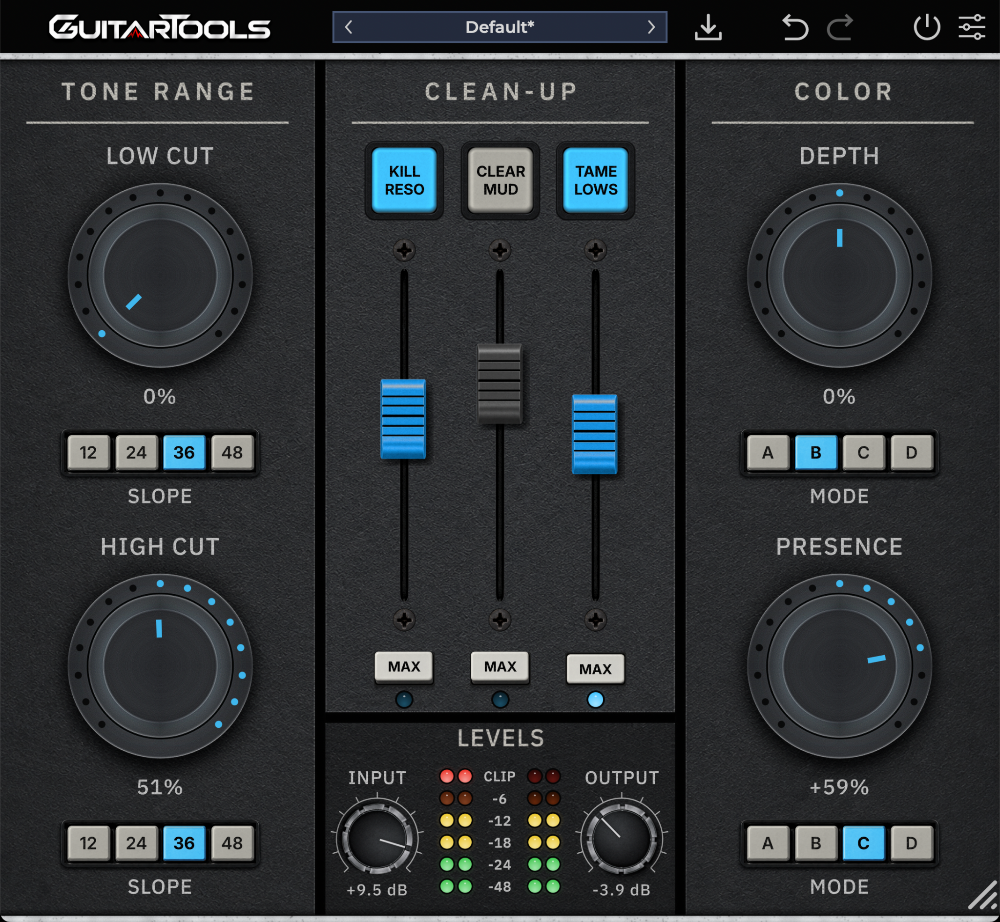
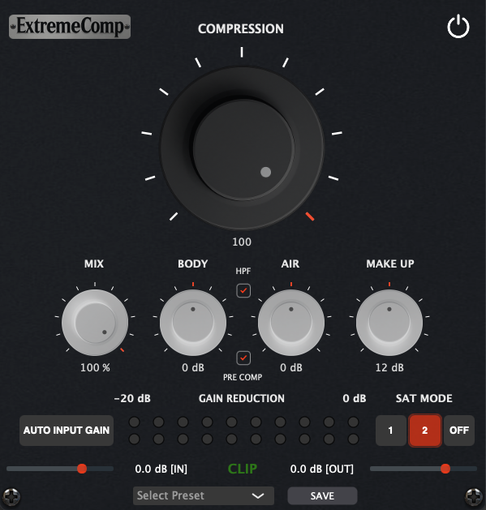

Quance
Built most of the UI and added DSP features and changes on top of the original base version.
codwaves.comAudio Software Engineer · C++ / JUCE
Welcome to my portfolio! 💼
I'm an audio engineer based in Buenos Aires, Argentina, building audio plugins with modern C++ and JUCE. My degree covered acoustics, electroacoustics, DSP, and music production. I have also been playing guitar for more than 15 years and love recording and mixing my own music, so I build tools with both the engineering and the user in mind.
I've worked as an audio software developer and shipped commercial plugins, covering everything from DSP to user interfaces. I also develop my own personal plugin projects.
I'm interested in remote teams working on technically challenging audio software, and I'm also open to freelance and project-based work.
Feel free to explore my work and get in touch.
Commercial plugins I worked on, with my part in each.
Built most of the UI and added DSP features and changes on top of the original base version.
codwaves.com
Built most of the UI and added DSP features and changes on top of the original base version.
codwaves.comPlugins I designed and built on my own.

All-in-one toolbox plugin for mixing modern electric guitars. Built with C++ and JUCE.
View details →
Dual-stage dynamics processor combining classic FET and optical compression, with a swappable processing order. Built with C++ and JUCE.
View details →
Guitar and bass cabinet IR loader with extended processing features. Built with C++ and JUCE.
View details →
Aggressive vocal compressor for heavy vocals, with auto input leveling, EQ, saturation and other commonly used tools. Built with C++ and JUCE.
View details →